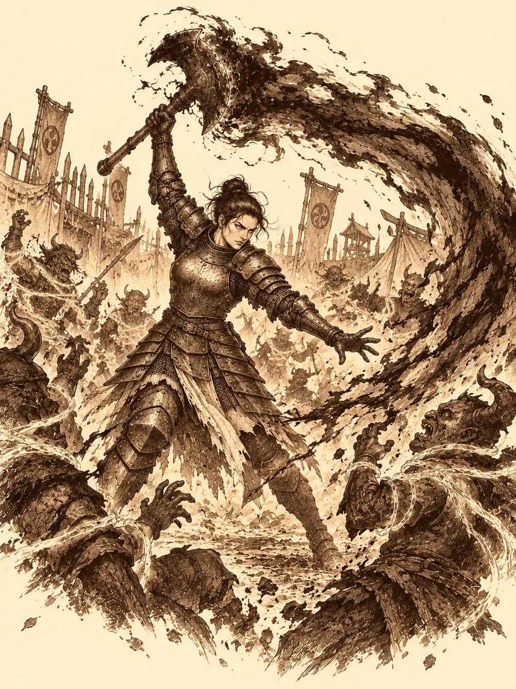

Capítulo 172
Festival demoníaco
Libro X · Hasta pronto, Kuroto
Dentro de la tienda olía a caballo quemado y a azufre. Véspera estaba sentada en el suelo, sin armadura, con una camisa sencilla y las cadenas en las muñecas, jugando con su montura a echar un dado. Jezebel era un corcel del abismo de crines negras que hablaba la lengua de los demonios y mentía fatal. Justo cuando el dado de hueso iba a caer en seis, dio un pisotón y lo hizo rodar hasta el dos.
"Eso es hacer trampas, Jezebel".
"¿Yo? Yo no he hecho ninguna trampa".
Jin entró con un plato de merluza, porque le había prometido comida y él cumplía lo que prometía. Las pupilas de la prisionera se dilataron como las de un gato y la merluza desapareció en un suspiro. Detrás de Jin entraron Palayer y Banzo.
Sirth y la paladina se habían pasado los días interrogándola. Les había dado los nombres y las posiciones de los generales de Otakemaru, y ahora tocaba comprobar si eran ciertos. Véspera había aceptado guiar la siguiente incursión como prueba de confianza. Mientras tanto, Jin seguía entrenando tropas en el sur; Sun recogía hierbas para Arwen a cambio de unas monedas que pensaba gastar en comida para ella; Banzo golpeaba sacos y árboles con una rabia nueva desde que un viejo conocido de su tribu lo había dejado medio muerto en la cala; y Kurobane meditaba cada vez que podía, buscando la forma de librarse de su oscuridad.
A Palayer le pesaba otra cosa. Había jurado acabar con los demonios, y ahora resultaba que muchos de aquellos demonios eran yokai transformados que conservaban su alma.
"Quiero que lo entendáis", les dijo antes de salir. "Si aún pueden salvarse, quiero intentarlo. He prometido dar refugio a los que abandonen las armas. Ayudadme a cumplir mi palabra".
Jin dijo que la apoyaba, que si había una posibilidad de paz había que buscarla. Banzo no dijo nada, pero los que lo conocían le vieron la cara. Kurobane tampoco estaba convencido. La paladina les recordó que la confianza se ganaba poco a poco y que aquello era solo un primer paso.
Le devolvieron a Véspera su armadura y le quitaron las cadenas, aunque se quedaron con el hacha y el escudo hasta que hiciera falta. Ella se encogió de hombros y despidió a Jezebel, que se hundió en el suelo de vuelta al abismo protestando por la comida.
El páramo seguía igual de muerto que la primera vez. Véspera caminaba delante, con Palayer y el mapa, y Banzo un paso detrás de ella sin quitarle los ojos de la nuca. Los llevó por barrancos y hondonadas donde no pasaban patrullas, y en un punto concreto se detuvo.
"¿Por qué te paras, criatura?", le preguntó el goliat.
"Tengo un nombre. Puedes llamarme Véspera. Me paro porque nos estamos acercando al campamento de otro general. Evilius. Y no es precisamente el que más me agrada".
Les explicó que era un maestro del control, un bufón, un demonio del abismo capaz de doblegar la voluntad de quienes tenía bajo su yugo y que se reía de las desgracias de los que estaban por debajo. De todos los generales, era con el que más se había peleado a lo largo de los años.
"Ojalá se rindiera. No tengo muchas esperanzas".
"Si ves a alguno de los tuyos dentro, intenta que suelte las armas", le dijo Palayer. "El objetivo es el general. Después, que se rindan todos los que puedan. Y si huyen, que huyan".
Al acercarse oyeron música. Entre los troncos de la empalizada se colaban luces de colores y risas, como si dentro se celebrara una fiesta. Palayer quiso sentir cuántas presencias había al otro lado y, al moverse, hizo ruido. Ya no había tiempo para muchos planes.
Fue Banzo quien lo propuso: entrarían como prisioneros. Le devolvieron a Véspera el hacha para que la escolta resultara creíble. Jin, Palayer y el goliat irían por delante con las manos a la espalda y sin esposas de verdad. Sun se convirtió en mosca y se escondió en un hueco de la armadura de la paladina, porque en aquel campamento había quien veía lo invisible. Kurobane entraría por un lateral, pegado a las sombras.
"La palabra para atacar será mono", dijo Banzo.
En la puerta, dos demonios les cortaron el paso. Véspera les dijo que traía cuatro prisioneros importantes de su última salida y les preguntó si no habían oído las noticias. Uno de ellos se puso a contar con los dedos y le salieron tres. Volvió a contarlos. Banzo le escupió en la cara. El demonio le agarró la mandíbula como quien mira los dientes de un caballo, se rio y se relamió el escupitajo. Los dejaron pasar.
Véspera los empujaba con el escudo entre insultos para que no se notara. Evilius los esperaba en una tarima, rodeado de música, y se giró con una sonrisa de oreja a oreja al verlos.
"Vaya, vaya, vaya. ¿Qué nos has traído, Véspera?". Miró a Banzo de arriba abajo. "Este grandote tiene buenas chichas. Me lo quiero comer. ¿Y qué es eso tan oscuro? Bueno, trocea al gordito y a los otros dos tiradlos al foso".
Unos oni empujaron a Jin y a Palayer hacia el foso. Banzo se quedó frente a la tarima. Evilius sacó un estoque y la hoja se le cubrió de escarcha.
"Véspera, suéltalo. Vamos a divertirnos".
Ella le tendió al goliat su propia arma. Banzo no la cogió.
"¿Te crees que necesito un arma, escoria? ¿No querías matarme con tus manos? Ven aquí. Mátame como el demonio que eres".
Jin y Palayer se esfumaron del borde del foso y reaparecieron en tierra firme. Sun salió de la armadura en forma de mosca, buscando dónde golpear. Evilius se volvió invisible y su voz flotó por el campamento, riéndose. Luego la paladina sintió algo dentro de la cabeza, como un dedo que le apretara la frente, y se le vació. No conseguía encontrar las palabras, ni las oraciones, ni la manera de despertar la fuerza de sus objetos. Se quedó con el arma en la mano, sin saber muy bien qué hacer con ella.
Banzo siguió la risa. Se lanzó sobre el lugar de donde venía la voz, chocó con algo que no veía y cayó encima, sujetándolo bajo su peso contra el suelo.
"Te tengo".
Sun intentaba atizar con el bastón en el hueco entre la barriga del goliat y la tierra, y fallaba más de lo que acertaba. La guarnición se les echó encima. Véspera intentó curar la mente de Palayer con su toque y descubrió que no bastaba; arrojó el hacha de Banzo cerca de él y se plantó con el escudo delante de la drow.
Evilius convirtió a Sun y a Banzo en conejos. El mono recuperó su forma enseguida y le dio un golpe a su compañero para devolverle la suya. Véspera se acercó a una vieja oni que peleaba a su lado y le habló de todas las víctimas que habían caído bajo el mando de aquel bufón, y la anciana bajó el arma y se apartó. Luego el general clavó los ojos en Jin y Jin dejó de pelear. Dejó caer el escudo de energía que lo protegía y se quedó quieto, obedeciendo a otra voluntad.

Entonces Véspera levantó su hacha. La hoja se volvió negra.
"Mientras yo esté aquí, no".
Una onda de oscuridad salió del hacha y barrió el campamento. A su paso se deshicieron las redes, los hechizos, las órdenes que se habían metido en la cabeza de los cazadores. Les dejó además una piel más dura ante la magia. Palayer parpadeó, se tocó la frente y supo otra vez quién era. Recogió el hacha del goliat, se la devolvió y descargó sobre Evilius un golpe radiante que lo hizo aullar. Véspera volvió a colocarse delante de ella con el escudo.
Banzo soltó toda su furia. Cuando un oni se le echó encima, de su espalda salió la figura de tritón hecha de sombra y le arrancó la cabeza. Jin y Kurobane sostenían los flancos. Sun, por fin, encontró al general y lo alcanzó de lleno.
Evilius cayó, y al caer reventó en una ráfaga de hielo que dejó al mono y al ninja medio congelados y muy malheridos.
La guarnición se quedó quieta. Habían oído la explosión. Véspera aprovechó el silencio, alzó el arma envuelta en oscuridad y les gritó que todavía estaban a tiempo de marcharse. Varios echaron a correr. Otros no: siguieron atacando, y esos cayeron.
Banzo se dio la vuelta y fue derecho hacia Véspera. Jin intentó frenarlo.
"No pegues a los que intentan buscar refugio", le gritaron.
El goliat corrió hasta ella sin decir nada. Una demonio que la estaba atacando por la espalda cayó partida de un hachazo, y Banzo no le apartó la mirada a la general mientras lo hacía. Ella no se movió. Al cabo de un rato, él respiró y se calmó.
Véspera siguió cubriendo a Kurobane con el escudo hasta que no quedó nadie en pie, aunque el ninja no le había pedido protección.
Cuando todo acabó, se acercó a los heridos con la mano tendida. Kurobane la apartó y se quitó la máscara de oni.
"No confío en ti ni en los tuyos. Te lo digo sin rodeos. Si nos traicionas, mi filo terminará en tu cuello".
"Me parece un comportamiento completamente racional. Yo tampoco me fío del todo de vosotros. Pero sé lo que tengo que hacer por mi gente".
Fue hacia Sun, que estaba encogido y tiritando, y Banzo agarró al mono de la cola y lo echó hacia atrás.
"Ni se te ocurra tocarlo. Es un demonio, como ellos. Nos está engañando. En cuanto pueda hará lo mismo que hizo Rua".
"Si no te fías de mí, toma". Véspera le ofreció el hacha y el escudo. "No tengo armas. Solo quiero curarlos".
Sun dijo que sí. Ella le puso la mano encima y al mono se le fue el frío de los huesos. Luego volvió a ofrecer sus armas y fue Palayer quien las tomó.
Afinaron el oído junto a los fosos por si quedaba alguien vivo. No oyeron nada. Luego regresaron al campamento aliado. Véspera había guiado al grupo, había deshecho la magia que los ataba y había protegido a quienes la amenazaban. Nadie la llamó amiga por ello.
Sirth reunió las opiniones de todos. Palayer, Sun, Kurobane y Jin le contaron lo que había hecho la general durante el combate. Banzo dijo que desconfiaba de sus motivos y que los que habían huido avisarían a otros campamentos. La propia Véspera, bajo el círculo de verdad, confirmó que había intentado convencer a los que escaparon, y añadió que solo quedaban dos generales y su señor. Kurobane pidió hablar con ella para librarse de las sombras, y Sirth le hizo notar que pedía ayuda a quien acababa de amenazar. Luego el clérigo le dio a la prisionera dos anillos, uno que delataba sus mentiras y otro que permitía encontrarla, le quitó las esposas y la dejó moverse por el campamento sin salir de él.
Esa noche, en la taberna, Banzo bebió demasiado licor de tanuki y Sirth le prestó una mirada que veía lo que había debajo de las cosas. A través de ella, el goliat vio a Véspera como lo que había sido: una criatura felina de dos colas. Le escuchó el corazón. Y empezó, muy despacio, a distinguirla de Rua.
Véspera salió a recorrer el campamento y encontró a Kurobane meditando a solas. Él le agradeció que hubiera querido curarlo en la incursión, le habló del aislamiento de su monasterio y de cómo Osuray lo había utilizado, y le pidió ayuda para abandonar la magia de las sombras. Ella le recordó que le había arrancado el corazón a uno de los suyos. Le dijo que su inestabilidad le recordaba a la de un general muerto, y que no pensaba dejar que aquel camino empezara otra vez. Las sombras de la general crecieron. Kurobane abrió los brazos y le dijo que no iba a luchar, aunque decidiera matarlo.
Véspera lo levantó por el cuello y lo envolvió en oscuridad. Le arrancó del cuerpo lo que lo impregnaba, con un dolor que le dejó un hueco dentro, y lo dejó caer. El ninja huyó tropezando, muerto de miedo. Ella apretó en el puño la sombra retorcida que le había sacado hasta deshacerla, y siguió caminando.
En los barrios bajos de Sho, Channi entró en la cofradía al oír gritos y encontró a un prisionero atado y torturado. Tiari dijo que había vendido secretos del shogunato a un noble del Puerto de las Espadas y lo mató con dardos delante de ella. La niña le preguntó si a ella le haría lo mismo. Luego se quitó el anillo de la cadena y se lo devolvió: no quería espiar a su familia. Tiari le contó que el anillo nunca había estado activado. Hablaron de jardines; la mujer dijo que ella era la mala hierba que hace falta para proteger el jardín, y Channi le contestó que también podía ser parte de él. Tiari la abrazó, le colocó bien el sombrero y la despidió con un puñado de semillas.
En la plaza central de Sho, donde el aliento del dragón había dejado la tierra estéril, un goliat encapuchado con media cara fundida agarró del brazo a un niño y le preguntó por el dragón de sombras. El crío le dijo que los cazadores lo habían echado de la ciudad. El goliat apretó hasta hacerle daño y le exigió saber quiénes eran y dónde podía encontrarlos.
Lejos de allí, Sun registraba la tienda vacía del monje Tang buscando alguna señal de lo que le había pasado cuando una lanza de tres puntas se clavó a sus pies con una nota: si quería respuestas, que la agarrara. La agarró. Apareció delante de Shen, que no le habló de Tang. Le habló de la sensación del mono de no estar a la altura de sus compañeros. Le enseñó cuatro piezas de echar suertes, de seis, veinte, cien y mil caras, con rostros distintos en cada una, y todos acabaron mostrando el de Sun. Por un instante le hizo ver su pelaje dorado y una armadura que se desvaneció enseguida. Le exigió que completara su camino y que después le concediera un gran combate. Sun aceptó. Shen se convirtió en halcón y salió volando hacia el templo del guardián del este, y el mono silbó a su nube y fue tras él, adelantándose y quedándose atrás por turnos hasta perderse en el cielo.